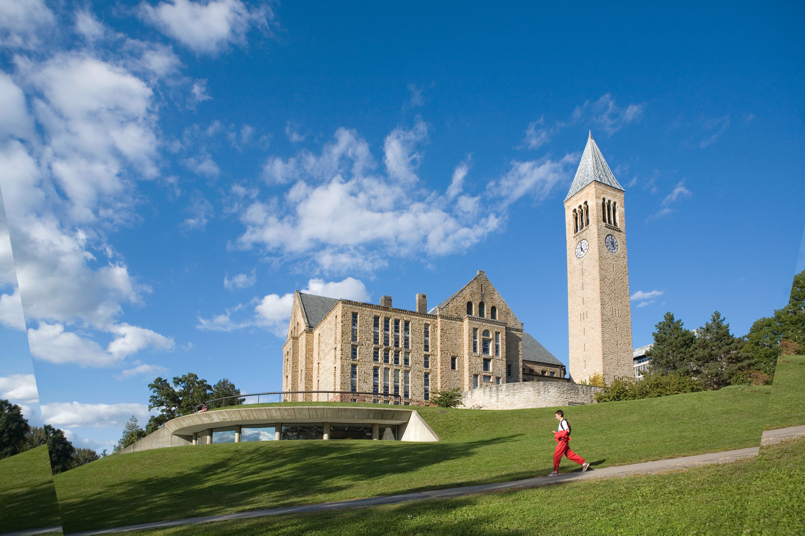

About
I focus on the intersection of AI safety and computational neuroscience, where my research centers on developing methods to analyze the relationship between speech and neural data. By aligning neural network embeddings with time-resolved brain activity, I aim to deepen our understanding of how the brain processes auditory and language information.
Building on my background in computational neuroscience, I now focus on AI safety, model evaluations, and Reinforcement Learning from Human Feedback (RLHF). I’m driven by the challenge of aligning AI systems with human values and user needs. In my view, developing techniques to elicit preferences from both models and users is essential for the safe, ethical deployment of AI and for optimizing its performance in real-world applications.
I contribute to the research community by creating and sharing tutorials on key concepts in computational biology and computer science. My goal is to develop AI systems that are reliable, aligned with human values and users' long-term objectives, while fostering scientific progress. I see these goals as intrinsically connected and mutually reinforcing.
Projects
CloudPref: Model Evaluation for Cloud Providers
- Developed a framework to elicit and evaluate model preferences for cloud providers (AWS, GCP, Azure), enabling models to differentiate between provider options based on specific scenarios.
- Designed custom metrics to analyze model performance and behavior, optimizing recommendations for cost-effectiveness and deployment efficiency.
Intracranial Speech Processing
- Developed a pipeline for analyzing stereotactic electroencephalography (sEEG) data, aligned with audio and language features in a speech task.
- Created workflows to preprocess neural recordings, extract audio features (e.g., fundamental frequency, sound intensity) and language features (e.g., GPT-2 embeddings, surprisal), and correlate them with neural responses.
- Applied methods to compare electrode recordings with time-resolved annotations of auditory and language stimuli across participants.
- Designed tools for visualizing stimulus onset, evoked responses, and electrode responsiveness to language processing.
Experience
Stanford University, Laboratory of Speech Neuroscience
Research Scientist (2023–Present)

- Investigate neural mechanisms of speech processing using stereotactic electroencephalography (sEEG) recordings.
- Apply decoding models to identify neural populations encoding auditory and language features.
- Align embeddings in neural networks (e.g., wav2vec2.0, GPT-2) with neural population responses across recording sites for anatomical localization.
- Develop lab protocols for streamlined data acquisition, preprocessing, and analysis.
New York University, Department of Psychology
Graduate Research Assistant (2021–2023)
- Conducted research on auditory and language processing at the Poeppel Lab and Max Planck NYU Center for Language, Music, and Emotion.
- Used magnetoencephalography (MEG) to measure audiovisual interference during a Stroop task, probing automatic label retrieval in individuals with absolute pitch.
Cornell University, Department of Government
Undergraduate Research Assistant (2018–2020)
- Thesis on energy geopolitics and trade dynamics in the South China Sea, analyzing the economic impacts of territorial disputes.
- Teaching assistant for a course on the science of social behavior, assisting with curriculum development and leading discussions.
Technical Skills
- Programming Languages: Python, MATLAB, Julia, R, JavaScript
- Machine Learning Frameworks: PyTorch, TensorFlow, JAX, scikit-learn
Personal Interests
Random Walks Through Libraries and Bookstores
I enjoy wandering through the stacks of historic libraries, discovering new books and ideas. One of my favorites is the Uris Library at Cornell University.
Travel and Live Music
I love exploring new venues for live music, particularly the music of the Grateful Dead. You can check out recordings at the Grateful Dead Archive.
Long-Horizon Predictions
I am working towards a future where intelligent systems make critical decisions in our lives and policies. My focus is ensuring this future remains vibrant and filled with opportunities for generations to come.
While focusing on long-term outcomes, I have three near-term goals in sight:
- New York Jets winning a Super Bowl (Rodgers holding a Lombardi trophy)
- New York Knicks securing an NBA championship (Brunson gets a statue)
- Secure deployment of AGI (Ilya achieves safe and secure superintelligence)
I’m open to friendly wagers on which of these events we’ll see first!
Contact Me
Feel free to reach out if you're interested in my work or potential collaborations.
Email: derek.rosenzweig1@gmail.com
GitHub: github.com/dr2633